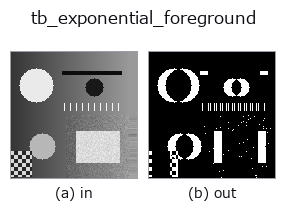

typed op• Data kinds: video → video
• Call: fullseye.apply(img, "tb_exponential_foreground", a=0.5, b=0.5) (2-D model = एक image + दो scalar knobs a,b∈[0,1])

*Figure synthetic 128×128 input पर सच में चलाकर मिला output है। बाईं ओर input, दाईं ओर output। Point clouds ऊपर से देखे गए scatter के रूप में (brightness = z), 1-D series line के रूप में, volumes z दिशा में maximum-intensity projection के रूप में, videos बीच के frame के रूप में, complex images amplitude के रूप में, और जो return values चित्र नहीं बन सकते वे स्वयं values के रूप में दिखाए जाते हैं।*
Knob a को बदलकर (0.1 / 0.5 / 0.9, दूसरा knob default पर):
▸ tb_exponential_foreground: knob a को बदलने का figure (docs site)
Knob b को बदलकर (0.1 / 0.5 / 0.9, दूसरा knob default पर):
▸ tb_exponential_foreground: knob b को बदलने का figure (docs site)
Stages (पहले आने वाले ops → यह op, बाएँ से क्रम में):
▸ tb_exponential_foreground: stages का figure (docs site)
दूसरी images पर भी (synthetic scene / photo / coins। ऊपर की row में inputs, नीचे की row में उनके outputs। Knobs default पर):
▸ tb_exponential_foreground: दूसरी images पर output (docs site)
Motion (GIF: frames / views / slices क्रम से। स्थिर figure ही पूरा रूप है, GIF सहायक है):
foreground masks |frame − exponential background| > threshold → 0/1 (T, H, W) (video)।
> नीचे का विस्तृत विवरण मूल text में है — सारांश और headings का अनुवाद हो चुका है।
exponential_background と同じ指数移動平均 bg += α (frame - bg) を回し、各フレームで 更新後の bg との差 |frame - bg| > threshold を 1 にする。先頭フレームは bg の初期化に使われ差が 0 なので、t = 0 は全画素 0。
• video: (T, H, W) 配列か 2-D フレームの list。整数 dtype は最大値で [0, 1] に正規化、float はクリップ。NaN/Inf は ValueError。
• alpha: [0, 1]。大きいほど背景が速く追従し、止まった物体は約 1/α 枚で消える。1 だと bg == frame になり常に全画素 0。
• threshold: [0, 1] の強度単位。全画素共通の絶対閾なので、暗部の雑音と明部の雑音を同じ閾で切ることになる。
• 返り値: (T, H, W) float64 の 0 / 1。
• 失敗: ValueError。
画素ごとの分散で閾を決めたいなら running_gaussian_foreground。ゴーストの無い動き検出なら three_frame_difference。
2-D 進化レジストリへ橋渡しした videostream の op exponential_foreground。実装は同じで、呼び出し規約だけ op(v, a, b) に合わせてある。a が alpha(既定 0.05)、b が threshold(既定 0.1)を振る。
• Sample data catalog (DL URL / license) — 2-D के लिए skimage.data (BSD/public) + synthetic, 3-D के लिए real data sources (Stanford/PDS आदि) के DL URL।
• Operators का स्रोत और संदर्भ — इस op family के मूल research/methods के स्रोत।
नीचे का program सच में चलता है, यह जाँचा गया है (figure वाला ही input)। Studio की help में यह block buttons बन जाता है, जिनसे इसे वहीं load करके चलाया जा सकता है।
img_to_video 0.50 0.50 tb_exponential_foreground 0.50 0.50
▸ यह pipeline load करें · Load करके चलाएँ
नीचे के उदाहरण मूल ledger op exponential_foreground को call करते हैं। यह bridge op वही implementation है, बस fn(v, a, b) convention के अनुसार ढाला गया है, इसलिए व्यवहार वैसा ही लागू होता है (केवल call का रूप अलग है)।
• video_streaming — py -3.11 examples/video_streaming.py
video को input के रूप में लेते हैं)identity · tb_temporal_bandpass · tb_temporal_band_power · tb_temporal_median_window · tb_moving_average_window · tb_background_subtraction_window · tb_frame_difference_causal · tb_exponential_background
typed)tb_points_to_voxel · tb_estimate_point_normals · tb_iss_keypoints · tb_project_points · tb_render_point_depth · tb_statistical_outlier_removal · tb_radius_outlier_removal · tb_voxel_grid_downsample
*Provenance: ops.py — 2D operator registry. यह per-op note tools/opdocs.py md से अपने-आप generate होता है (हाथ से edit न करें)।*
© 2026 Kazufumi Furuse — Fullseye operator documentation. Licensed under Apache-2.0.